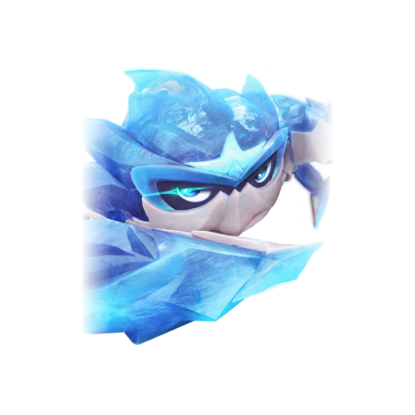

รายชื่อ Aniimo › #025

ปูธรณี (Geoclaw)
#025ธาตุน้ำแข็งNovaBreakTier A
อาศัยในถ้ำ กินแร่ธาตุ และใช้กระดองที่ตกผลึกงดงามล่อเหยื่อ
ดูรายละเอียดเต็ม ร่างพิเศษ และร่างเปล่งประกายค่าสถานะพื้นฐาน
| HP | 93 |
|---|---|
| ATK | 80 |
| P.DEF | 113 |
| M.DEF | 79 |
| REGEN | 82 |
| BREAK | 103 |
สกิล
| โจมตีปกติ | ATK น้ำแข็ง (BREAK) ใช้พลังน้ำแข็งโจมตีเป้าหมายระยะประชิด |
| สกิล 1 | Icy Gravel Dance น้ำแข็ง เรียกพายุน้ำแข็งที่สะสม [Ice Debuff] บนเป้าหมายต่อเนื่อง พายุจะเคลื่อนไปข้างหน้าจนกว่าจะชนกำแพงหรือเป้าหมาย |
| สกิล 2 | Ice Spikes น้ำแข็ง สร้างหนามน้ำแข็งข้างหน้า โจมตีและ [แช่แข็ง] เป้าหมาย 2.5 วินาที ใช้ได้ขณะมุดดิน จากนั้นพุ่งไปข้างหน้าแล้วโผล่ขึ้นจากใต้ดิน |
| สกิล 3 | Frost Slam น้ำแข็ง รวบรวมไอเย็นไว้ในก้ามทั้งสอง แล้วทุบลงทำดาเมจวงกว้างด้านหน้า และสร้างกำแพงน้ำแข็ง 5 วินาที |
| อัลติเมต | Freezing Claws น้ำแข็ง ทำดาเมจเป็นวงกว้าง |
สายวิวัฒนาการ
- ปูหน่ออ่อน → ปูธรณี (Aniimo เลเวล 21, นิสัยมี [Tenacious], ชนะ Alpha Geoclaw)
Held Item ที่แนะนำ
- Gargantuan Horn Aniimo ที่สวมใส่ได้ BREAK เพิ่ม 0.7 ต่อเลเวล
งานใน Homeland
งานธาตุน้ำแข็ง Lv.3, ขนของ Lv.3